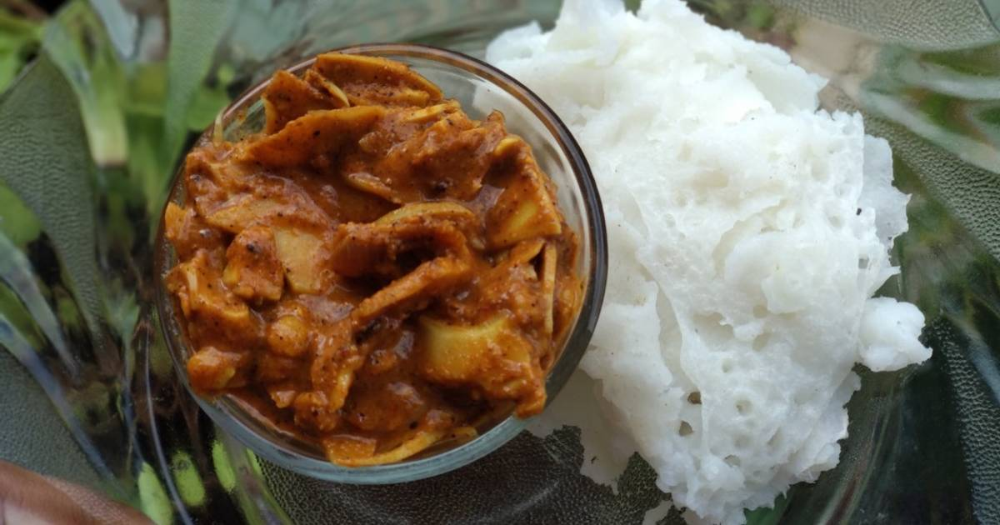

FOOD VARIETIES
Famous Dishes of Madhya Pradesh üçΩÔ∏è
Poha & Jalebi üç≤ Flattened rice cooked with onions, turmeric, and spices. Served with crispy jalebi, sev, and a squeeze of lemon.
Dal Bafla ü•ü Similar to Dal Baati of Rajasthan.
Baked wheat balls (Bafla) served with spicy dal (lentils) and ghee.
Bhutte Ka Kees üçõ Grated corn cooked with spices, milk, and ghee.
A delicious and healthy street food
Bhopali Gosht Korma üçñ A rich and flavorful mutton curry with Mughlai influences.
Made with aromatic spices and served with naan or rice.
Malpua üç° A festive delicacy made of flour, milk, and sugar, deep-fried and dipped in syrup.
Chironji Ki Barfi ü•û Another sweet delicacy made from chironji seeds, milk, and sugar.
Sabudana Khichdi üç≤ made from tapioca pearls cooked with peanuts, green chilies, and a light mix of spices.
Popular Street Foods üåÆü•§
Indori Namkeen & Sev üç¢ Indore is famous for its spicy sev, mixture, and namkeen snacks.
Khopra Patties ü•ô
Spicy, crispy snacks filled with lentils, potatoes, or peas, best enjoyed with chutney.
Shikanji ‚Äì Indore‚Äôs Special Milkshake ü•§
A thick and creamy yogurt-based drink, flavored with saffron and dry fruits.
Tribal & Traditional Cuisine üåø
Kadaknath Chicken ‚Äì Tribal Specialty üçö
A protein-rich black chicken dish, famous in Jhabua & Dhar.
Bamboo Shoot Curry ‚Äì Gond Tribe üç≤
A rare tribal dish made from bamboo shoots, herbs, and spices.

Aloo Bharta & Baigan Bharta ‚Äì Bundelkhand & Malwa üçõ
Mashed potatoes or roasted brinjals mixed with mustard oil and spices.